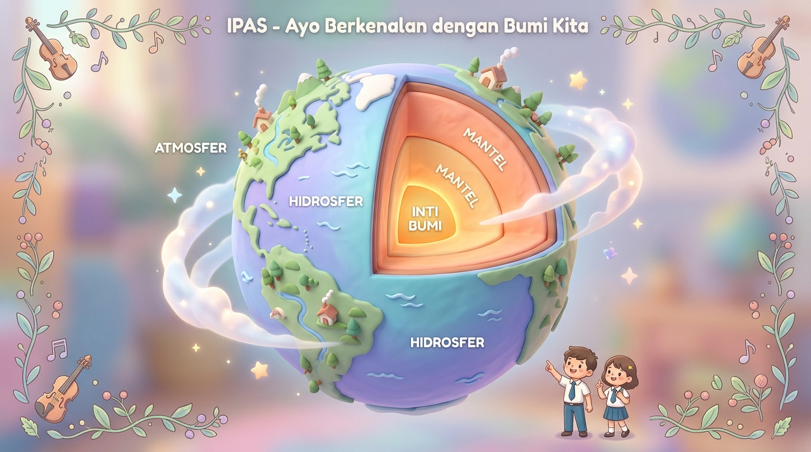

✨ STASIUN LUAR ANGKASA INTERNASIONAL • KETINGGIAN 400 KM
Ayo Berkenalan dengan Bumi Kita
Dari heningnya kosmos, bumi tampak seperti permata biru yang damai. Tataplah selimut awan dan keajaiban yang melindungi kita sebelum memulai penyelidikan!
🛰️
💡 Klik bola bumi atau tombol di atas untuk menembus atmosfer!
🌍 Stasiun Penyelidikan Bumi Mishka
Ketinggian: 0 km (Permukaan Daratan) • Analisis 3 Selimut & Anatomi Perut Bumi
🌬️ Misi 1: Tiga Selimut Pelindung Makhluk Hidup
Bumi adalah satu-satunya planet yang memiliki perpaduan 3 selimut sempurna. Klik kartu selimut untuk mengujinya!
🌬️
1. Atmosfer
Lapisan gas udara pelindung dari radiasi ultraviolet dan gesekan meteorit luar angkasa.
✅ Mengandung Oksigen (O₂) untuk napas
⛰️
2. Litosfer
Kerak padat daratan, gunung, bukit, dan tanah tempat kita berpijak dan membangun kehidupan.
✅ Terdiri dari lempeng tektonik
🌊
3. Hidrosfer
Seluruh lapisan air bumi: samudera, laut, danau, sungai, hingga es kutub yang abadi.
✅ Menutupi 71% permukaan bumi!
🛡️ Uji Atmosfer: Perisai Bintang Jatuh Aktif!
Saat meteorit meluncur dari antariksa dengan kecepatan 50.000 km/jam, gesekan udara di atmosfer membakarnya hingga habis menjadi bintang jatuh sebelum menyentuh tanah litosfer!
❓ Uji Nalar Mishka: Berapa persen permukaan bumi kita yang diselimuti oleh air (Hidrosfer)?
🥚 Misi 2: Irisan Anatomi Bumi & Analogi Telur Rebus
Bayangkan bumi kita dibelah menjadi irisan kue raksasa. Klik lapisan di bawah untuk menembus ke inti bumi!

1. Kerak Bumi (Crust) • 0 - 70 km
Analogi: Cangkang telur rebus tipis & padat tempat kita tinggal.
2. Mantel Bumi • 70 - 2.900 km
Analogi: Putih telur rebus tebal, magma panas 1.000°C.
3. Inti Bumi (Core) • 2.900 - 6.370 km
Analogi: Kuning telur, bola besi emas menyala 5.000°C!
🧱 Kerak Bumi: Cangkang Rapuh yang Mengapung
Ketebalannya hanya 5-70 km (kurang dari 1% dari total jari-jari bumi). Kerak ini retak-retak menjadi kepingan lempeng puzzle yang mengapung di atas mantel magma yang panas!
❓ Uji Logika Telur: Mengapa kerak bumi diibaratkan seperti cangkang telur rebus?
⚡ Misi 3: Simulasi Tabrakan Lempeng Tektonik & Seismograf
Kerak bumi tidak diam! Lempeng-lempeng benua bergerak beberapa sentimeter per tahun. Coba tabrakkan dua lempeng di bawah!
Lempeng Benua A ➔
⬅ Lempeng Benua B
STATUS SEISMOGRAF:TENANG (0.0 Skala Richter)
Tinggi Pegunungan: 0 m
⛰️ Lahirnya Pegunungan & Gempa Bumi
Ketika dua lempeng benua bertabrakan dengan kekuatan raksasa, lapisan tanah tidak punya jalan lain selain terlipat terdorong ke atas, membentuk puncak pegunungan tinggi seperti Pegunungan Himalaya! Getarannya memicu gempa bumi seismik.
❓ Uji Geologi: Peristiwa alam apakah yang terjadi ketika dua lempeng kerak bumi saling bertabrakan keras?
✍️ Sesi Menulis Terbimbing 5 Menit (Buku Tulis Fisik)
Buka buku IPAS Mishka, salin 3 poin mutiara bumi ini secara rapi!
==============================================
🌍 3 LAPISAN RAHASIA BUMI MISHKA
==============================================
1. Tiga Selimut Kehidupan Bumi:
• Litosfer : Lapisan tanah & batuan daratan.
• Hidrosfer: Lapisan air samudera & sungai (71%).
• Atmosfer : Lapisan udara gas pelindung bumi.
2. Lapisan Dalam: Kerak ➔ Mantel ➔ Inti Bumi.
3. Lempeng Tektonik: Kerak bumi terbagi puzzle yang
bergerak memicu gempa & membentuk pegunungan.
==============================================